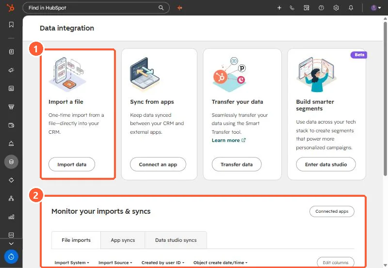
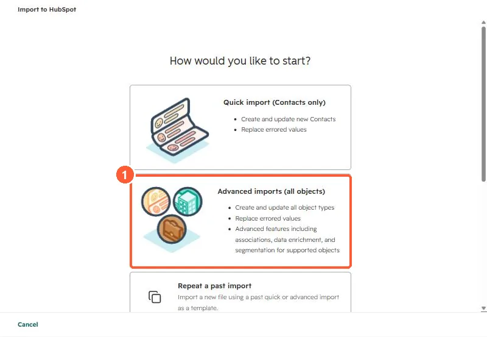

Short answer
Before importing, find out how many real people and companies the source actually holds. A bank's export of 15,820 logins was 14,251 people, because 1,483 email addresses were shared between users. Then choose match keys and test them: the bank's two systems shared no common ID, so matching went email first, then phone plus last name, because one phone number appeared on 311 users. Load a 25-record canary before the full run, keep every loader re-runnable, create new contacts as non-marketing, and export conflicts for a person to review.
1. Count real records first
The bank's export had one row per online banking login. Several family members or business staff often shared one email address. Importing logins as contacts would have merged unrelated people on email. The rules we set:
- Identical names across logins on one email merge into one contact.
- Different people on one email: one keeps the contact, the rest get a shared-email field so nothing is lost.
- Role mailboxes like
info@go to the company record instead of becoming an invented person.


2. Pick and test match keys
The bank's CRM and its banking platform shared no common key. Email matched most records. For the rest we used phone plus last name, not phone alone, because a single phone number appeared on 311 different users. Measure how unique a key is before trusting it.
3. Decide who wins
On conflict, the existing system's value stayed, and all 1,315 disagreements went to a CSV for a person to review. Silent overwrites are what make migrated data untrustworthy.
4. Load in stages
- Canary: push 25 deliberately varied records first, then look at them in HubSpot.
- Re-runnable loaders: each step checks what is already in the portal first, so a crash mid-load can resume without duplicates.
- Rollback file: record every ID created so a bad batch can be removed.
- Non-marketing by default: every new contact was created as non-marketing, and that field was never written on existing contacts.
For one-off spreadsheet loads, HubSpot's importer can do much of this. Advanced imports cover all objects and associations.


5. After the load
The last phase built segments from the new data. Build a few check lists too, such as contacts with no company or companies with no owner, and expect them to be empty. Related: duplicates after an import and finding the records from an import.